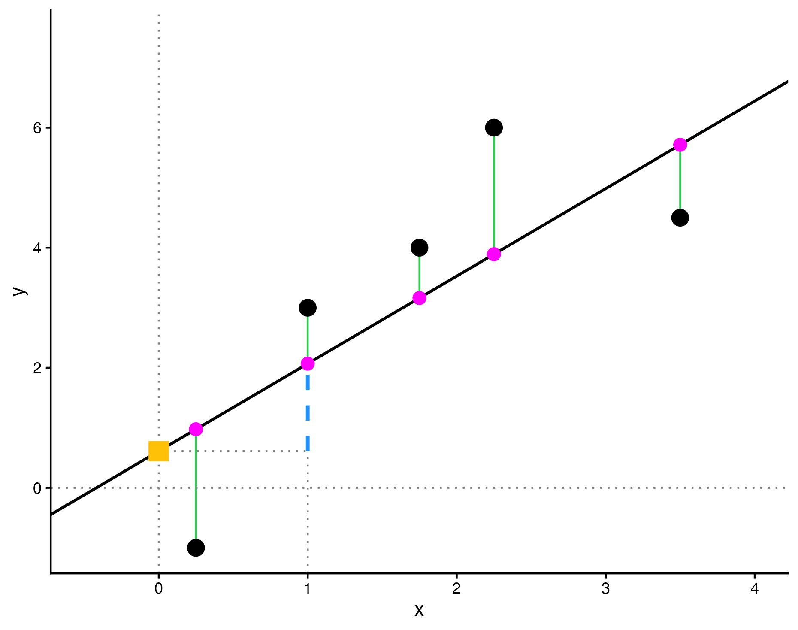
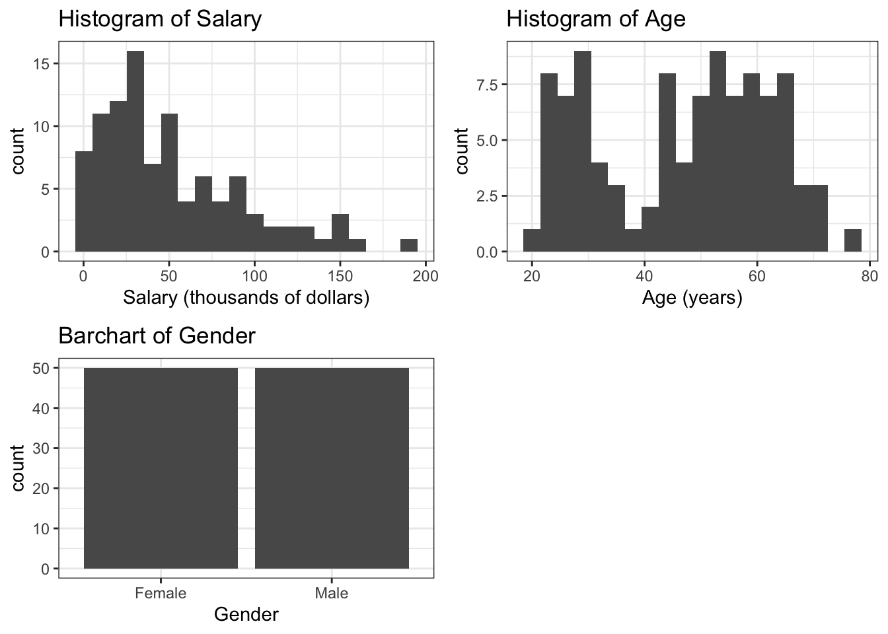
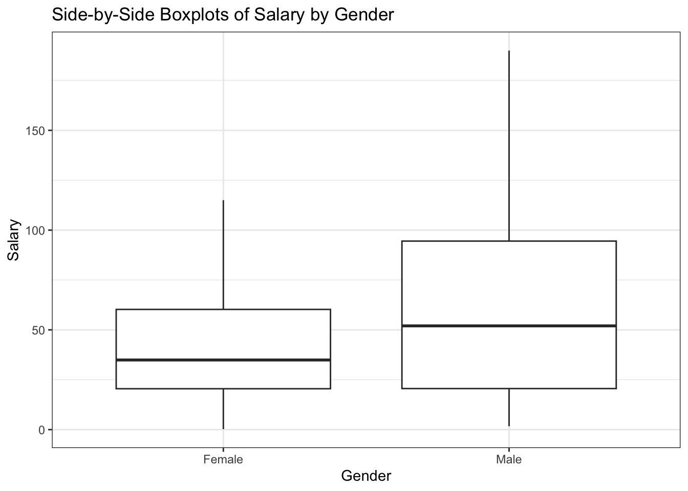
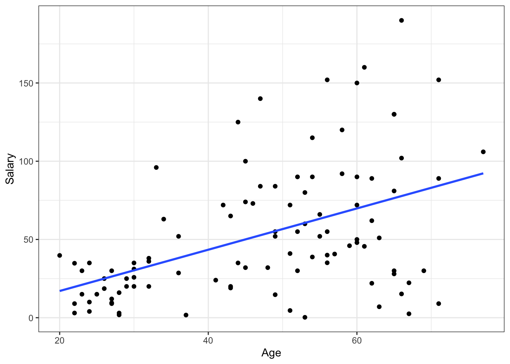
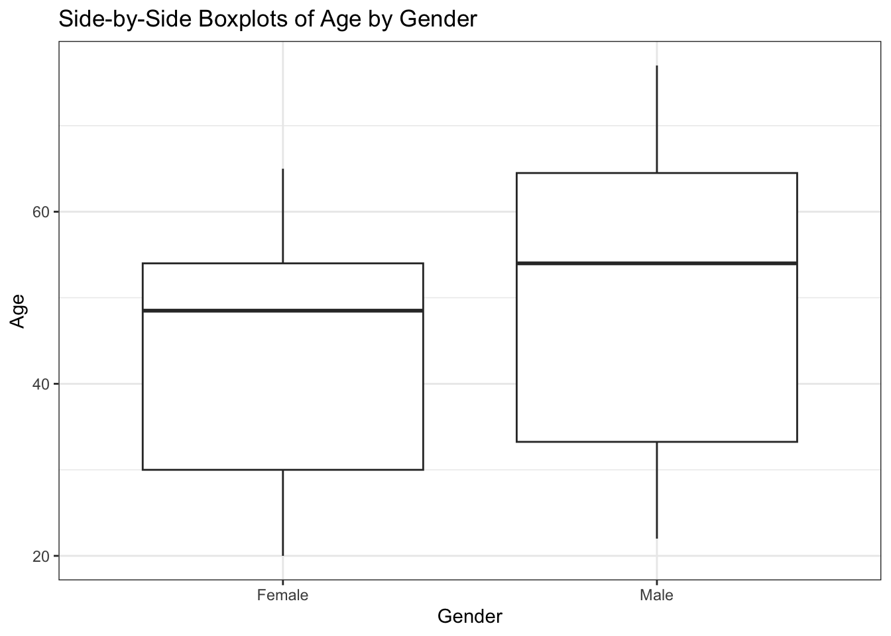
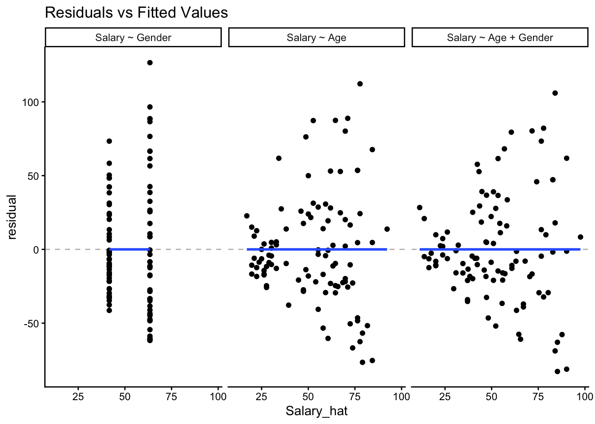
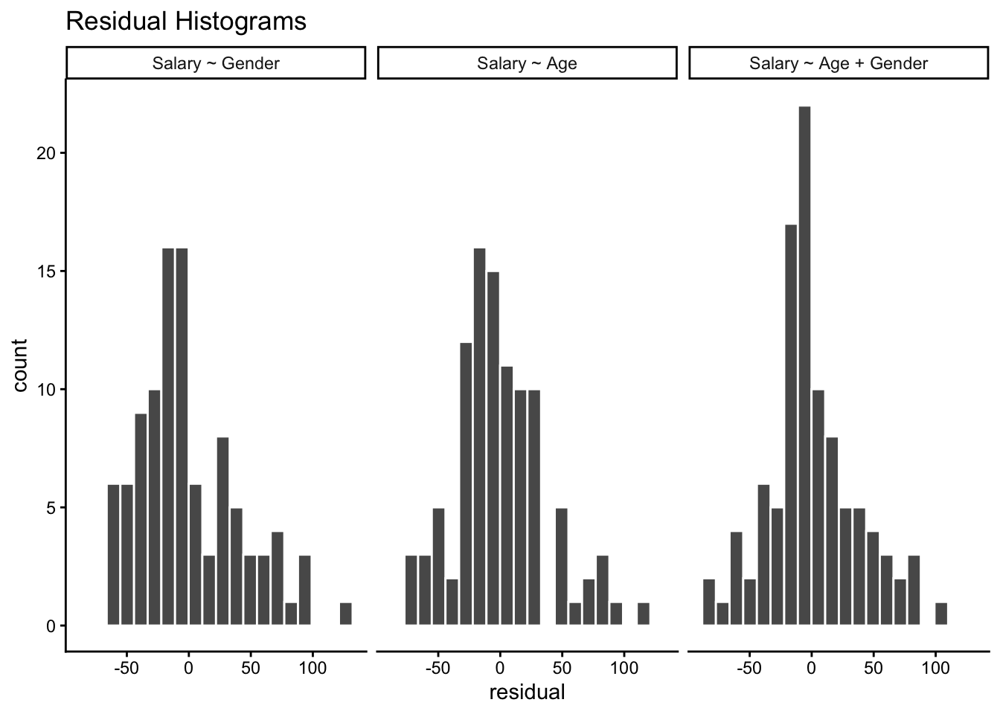

#load the necessary packages
library(tidyverse)
library(gglm)
library(moderndive)
library(pdxTrees)HW 4: Linear Regression
Math 141, Week 4
Due: Friday, February 27th at 11:59pm on Gradescope
In this homework assignment you will:
- Review study design and sampling concepts
- Demonstrate understanding of concepts like observed vs fitted values, residuals, and coefficients
- Practice using visualizations to perform exploratory data analysis and assess linear regression assumptions
- Practice interpreting regressions with categorical variables and multiple predictors
Add any collaborators here!
I collaborated with…
Remember that you are not allowed to use any generative AI models (like ChatGPT) on your assignment
Exercises
Exercise 1: Sampling Study Design
A large college class has 160 students. All 160 students attend the lectures together, but the students are divided into 4 groups, each of 40 students, for lab sections. Each lab section is administered by a different teaching assistant. The professor wants to conduct a survey about how satisfied the students are with the course, and she believes that the lab section a student is in might affect the student’s overall satisfaction with her course.
a. What type of study is this, and why?
b. Explain which of the following sampling strategies would be most appropriate for carrying out this study, being sure to discuss the drawbacks of the methods you did not select:
- Simple random sample
- Stratified random sample
- Cluster random sample.
Keep in mind that the professor believes student satisfaction may vary based on their lab section.
Exercise 2: Anatomy of a Regression
The graph below shows the results of regressing a variable \(y\) against a variable \(x\) using five data points (the black points). The graph may be easier to view in the rendered PDF.

Using the vocabulary of regression (fitted values, regression line, residuals, intercept coefficient, slope coefficient), explain what each of the following elements on the graph correspond to:
- The black solid line
- The blue dotted line
- The green solid vertical lines
- The pink points
- The yellow square
Exercise 3: Factors (Categorical Predictors)
We will again work with the pdxTrees data package. Run the following code chunk to obtain a data frame of the four parks closest to Reed, subsetted to only include trees of the Genus Pseudotsuga, Acer, Quercus, or Cornus. This data frame includes some additional modification to clean up the data. The chunk also shows how many trees of each Genus are in the near_reed dataset.
near_reed <- get_pdxTrees_parks() %>%
filter(Park %in% c("Crystal Springs Rhododendron Garden",
"Kenilworth Park",
"Eastmoreland Garden",
"Berkeley Park")) %>%
mutate(Type = case_when(
Functional_Type == "BD" | Functional_Type == "CD" ~ "Deciduous",
Functional_Type == "ED" | Functional_Type == "CE" ~ "Evergreen"
)) %>%
mutate(Crown_Width = (Crown_Width_NS + Crown_Width_EW)/2) %>%
drop_na(Type) %>%
filter(Genus %in% c("Pseudotsuga","Acer","Quercus","Cornus"))
near_reed %>% group_by(Genus) %>% summarize(Count=n())# A tibble: 4 × 2
Genus Count
<chr> <int>
1 Acer 104
2 Cornus 36
3 Pseudotsuga 193
4 Quercus 52a. In the chunk below, construct a linear model to analyze the differences in the Carbon_Sequestration_lb for each level in Genus. How many indicator variables are displayed in the regression table, and what are they? Which level of the Genus variable does not have an indicator variable?
b. Write down the formula for the linear model for Carbon_Sequestration_lb as a function of Genus.
c. Compute the mean Carbon_Sequestration_lb for trees in each Genus. Then, identify where the value for the Acer genus appears in the regression table.
d. Demonstrate how the mean Carbon_Sequestration_lb for trees from the Cornus, Pseudotsuga, or Quercus genera can be calculated from the regression table.
e. By default, R chooses the alphabetically first level of the explanatory variable to serve as the baseline. However, the order can be changed in R using some extra code. In the following code chunk, we re-order the Genus variable so that the largest category, Pseudotsuga, is the baseline group.
near_reed <- near_reed %>%
mutate(Genus = fct_relevel(Genus, "Pseudotsuga","Acer","Quercus","Cornus")) Create a new linear model for Carbon_Sequestration_lb as a function of Genus. Comment on how the coefficients estimates have changed.
f. Suppose a particular tree is a Bigleaf Maple, which is in the Acer genus. What is the predicted Carbon Sequestration using the model constructed in part (a)? What is the predicted Carbon Sequestration using the model constructed in part (e)? How do the predictions compare?
Exercise 4: Exploratory Data Analysis for Regression
We will study data on teacher salaries for the rest of this homework assignment. Our data is a sample of 100 post-secondary (i.e., college) teachers is collected from the 2010 American Community Survey Public Use Microdata Sample, as found in the Lock5Data R package. We are interested in exploring differences in salary based on gender (i.e., gender-based salary discrimination) among college teachers.
For this exercise, we will focus on the role of exploratory data analysis for linear regression models.
Load the dataset using the following code:
library(Lock5Data)
data("SalaryGender")
SalaryGender <- SalaryGender %>%
select(Gender, Age, Salary) %>%
mutate(Gender = ifelse(Gender == 0, "Female", "Male"))The data includes three variables:
- Gender: Coded as a binary “Female” or “Male”. It is not clear whether this truly reflects the gender identity of participants, or something different like biological sex. (We might assume that no participants with other gender identities were included, which limits our ability to generalize to the population at large.)
- Age: Age of participant, in years.
- Salary: Annual salary in thousands of US dollars.
a. As stated above, we are interesting in exploring salary differences based on gender. It’s important to start by thinking critically about the type of conclusions we can draw from this analysis, especially since we’re analyzing data about a sensitive (and very important) topic. What type of study is this data from, and what types of conclusions can be drawn as a result?
b. The chunk below creates exploratory visualizations of each variable: Salary, Age, and Gender. Why is it important to perform this step before building a linear regression model? Based on the visualizations, give an insight about each variable.
g1 <- ggplot(data = SalaryGender, aes(x = Salary)) + geom_histogram(bins = 20) +
theme_bw() + labs(title = "Histogram of Salary", x = "Salary (thousands of dollars)")
g2 <- ggplot(data = SalaryGender, aes(x = Age)) + geom_histogram(bins = 20) +
theme_bw() + labs(title = "Histogram of Age", x = "Age (years)")
g3 <- ggplot(data = SalaryGender, aes(x = Gender)) + geom_bar() +
theme_bw() + labs(title = "Barchart of Gender")
gridExtra::grid.arrange(g1, g2, g3, nrow = 2)
c. The chunk below investigates the bivariate relationship between Salary and Gender. What trends do you observe, and how are they relevant to building our linear model?
ggplot(data = SalaryGender, aes(x = Gender, y = Salary)) + geom_boxplot() +
theme_bw() + labs(title = "Side-by-Side Boxplots of Salary by Gender")
d. Assess the scatterplot produced by the chunk below. Describe what the graph is showing.
ggplot(SalaryGender, aes(x = Age, y = Salary)) + geom_point() +
geom_smooth(method = "lm", se = F) + theme_bw()
e. Calculate the correlation coefficient between Salary and Age, and comment on the strength of the relationship.
f. Assess the boxplots produced by the chunk below. Describe what the graph is showing. Explain how insights from this graph and the graph from part (d) are relevant to building our linear model. Keep in mind that our overall goal is to understand the relationship between salary and gender
ggplot(SalaryGender, aes(x = Gender, y = Age)) +
geom_boxplot() +
theme_bw() +
labs(title = "Side-by-Side Boxplots of Age by Gender")
g. In a new chunk below, create a scatterplot of salary vs age, colored by gender. Add gender-specific trend lines by adding + geom_parallel_slopes(se = FALSE). Comment on any trends observed.
Exercise 5: Salary Regression Model
In this exercise, you will use a regression model to investigate whether age explains the gap in salary between males and females in post-secondary education. (Note: Even if age explained the gap, there is still a gap! This is an indication of structural differences for men and women in the US.)
a. The chunk below creates a linear model using the SalaryGender data frame. Using the summary table, write the equation for the fitted model. Interpret each coefficient, and explain how their values validate your exploratory findings from the previous exercise.
lm_salary_gender <- lm(Salary ~ Age + Gender, data = SalaryGender)
get_regression_table(lm_salary_gender)# A tibble: 3 × 7
term estimate std_error statistic p_value lower_ci upper_ci
<chr> <dbl> <dbl> <dbl> <dbl> <dbl> <dbl>
1 intercept -13.3 12.0 -1.10 0.272 -37.2 10.6
2 Age 1.24 0.244 5.06 0 0.751 1.72
3 Gender: Male 15.8 7.43 2.12 0.036 1.02 30.5 b. Using your regression equation from part (a) of this exercise, calculate the model’s prediction for the salary of a female teacher who is 30 years old. Based on the exploratory visualizations in Exercise 4, is this an example of extrapolation?
Exercise 6: Assess Salary Regression Models
a. The model created for the previous exercise is just one example of a model that we could fit using the data set. Briefly explain how each of the four models below is different from each other.
m1 <- lm(Salary ~ Gender, data = SalaryGender)
m2 <- lm(Salary ~ Age, data = SalaryGender)
m3 <- lm(Salary ~ Age + Gender, data = SalaryGender)b. Which of the three models helps us best answer our original research question? Consider both \(R^2\) and the types of relationships each model captures in your argument.
c. Investigating when linear regression model assumptions hold is important to consider when selecting the best model(s) from a collection of possible models. Run the chunk below, and assess the set of graphs shown. Which LINE assumption(s) do these graphs relate to, and which model(s) satisfy it/them?
res <- bind_rows(get_regression_points(m1) %>%
mutate(model = "Salary ~ Gender") %>%
select(Salary, Salary_hat, residual, model),
get_regression_points(m2) %>%
mutate(model = "Salary ~ Age") %>%
select(Salary, Salary_hat, residual, model),
get_regression_points(m3) %>%
mutate(model = "Salary ~ Age + Gender") %>%
select(Salary, Salary_hat, residual, model))
res$model <- factor(res$model, levels = c("Salary ~ Gender",
"Salary ~ Age",
"Salary ~ Age + Gender"))
ggplot(res, aes(x = Salary_hat, y = residual)) +
geom_hline(aes(yintercept = 0), lty = 2, color = "gray") +
geom_point() +
geom_smooth(method = "lm", se = FALSE) +
facet_wrap(~model) +
labs(title = "Residuals vs Fitted Values") +
theme_classic()
d. Run the chunk below, and assess the next set of diagnostic graphs shown. Which LINE assumption(s) do these graphs relate to, and which model(s) satisfy it/them?
ggplot(res, aes(x = residual)) +
geom_histogram(bins = 20, color = "white") +
facet_wrap(~model) +
labs(title = "Residual Histograms") +
theme_classic()
e. Would you feel comfortable using any of these models to argue that there is evidence of gender-based salary discrimination among college teachers in 2010?